Studio: Loot
Every gun in The Last Fleet is rolled. When a soldier drops its rifle or you crack open a cache, the game picks a frame, a maker and a rarity from a loot table, then builds the gun from parts. Loot mode is where we tune those odds: how rare each tier is, what each source drops, which makers it favors, and where the hand-made relics come from.
Why does this need a tool? Because odds are hard to feel from a JSON file! Is a weight of 26 a lot? What does a
perLevel of 0.04 do ten decks down? The Loot Lab answers that by rolling thousands of drops with the game's own
code, and rolling them again every time you change something.
How to open it
Loot is the first mode tab along the top, and it's where Studio opens by default. From the command line:
dotnet run --project src/LastFleet.Studio -- --mode loot --select loot.station.soldier
Here's the mode with the station soldier's table picked and the Lab rolled:
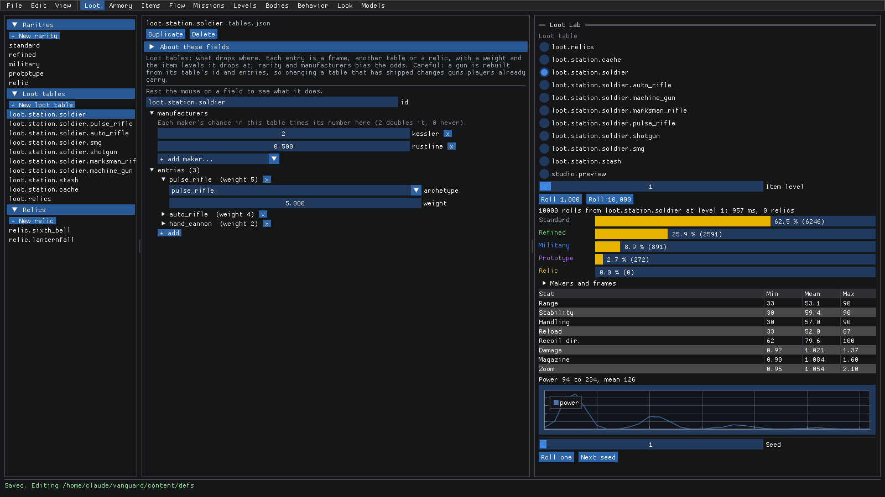
- On the left are the three lists Loot mode edits: Rarities (
rarities.json), Loot tables (tables.json) and Relics (relics.json), each with its own + New button. - In the middle is the editor for whatever you've picked.
- On the right is the Loot Lab. Pick a table, an Item level, and roll 1,000 or 10,000 drops. It shows the rarity shares, Makers and frames, every stat's spread and the power curve. Roll one shows a single gun in full.
New to Studio? Start with getting-started.md for the basics of editing, saving and undoing.
Make a table favor a maker
So you want station soldiers to drop more Vashti Labs guns? A loot table can bias the makers it rolls, without touching the makers themselves. Here's the flow:
Pick
loot.station.soldierunder Loot tables. Itsmanufacturersmap is at the top:kesslerat 2 (twice as likely) andrustlineat 0.5 (half as likely). Under that, itsentriesare the frames it drops, each with aweight.In the Lab, pick
loot.station.soldier, click Roll 10,000, then open Makers and frames. Kessler Armory is 63% of the drops, and Vashti Labs just 4.3%.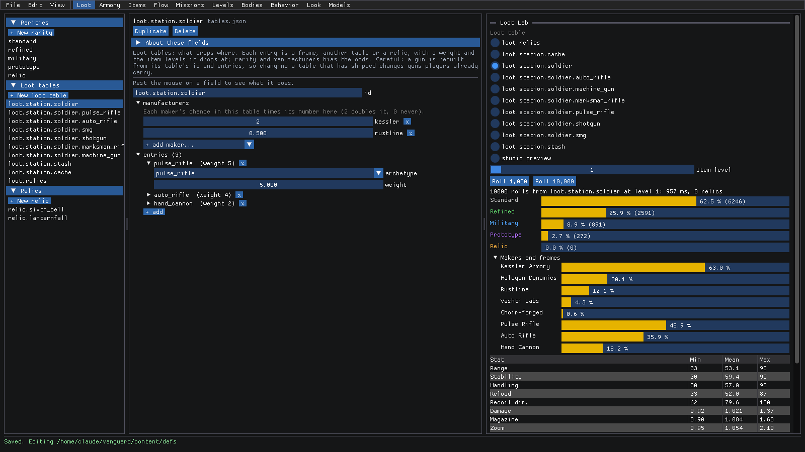
Open + add maker... under the map. It only offers the makers the table doesn't have yet. Pick
vashti.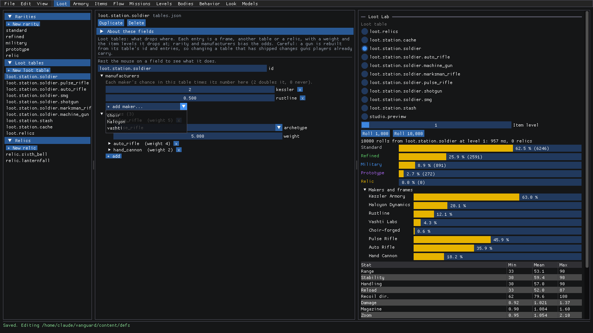
vashtishows up in the map. Drag its number up. At about 1.4, the Lab (which re-rolled on its own) has Vashti Labs at 5.8%, with everyone else giving up a little.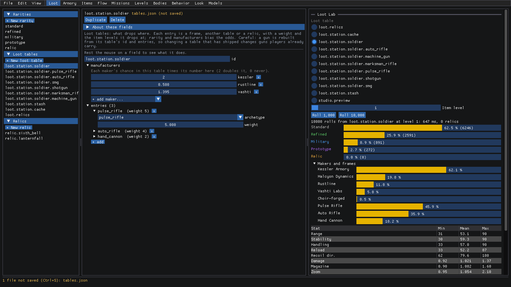
The table's entries work the same way, just for frames. Expand one and its archetype is picked from a list of every
frame. Swap the first entry from pulse_rifle to machine_gun and the Lab's frame shares follow right away:
Heads up! A gun is rebuilt from its seed, its table and its item level, so changing a table that's already shipped changes guns players are carrying. Happy with it? Ctrl+S. Just experimenting? Ctrl+Z until the status bar says Saved. again.
Make a new rarity
Want a tier rarer than Prototype? Rarities live in rarities.json, lowest first, and the order in the file is the
order of the tiers.
Pick the tier you want to copy (we'll use prototype), then click + New rarity. A copy called
newshows up at the end of the list, and it's already in the Lab: New, at 2.6% of the soldier table's drops.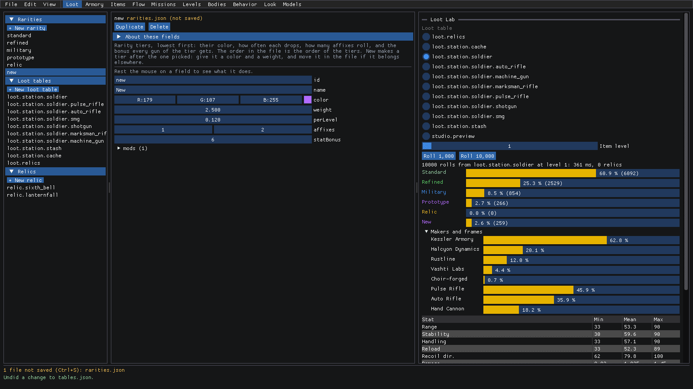
Click the
idfield, select it all and typeelite. Do the same withname:Elite. The name is what players see.Click the color swatch next to
color. The color picker opens, and you can drag around in it or type a hex code into the field at the bottom (we used#FF4F7A). Click anywhere else to close it.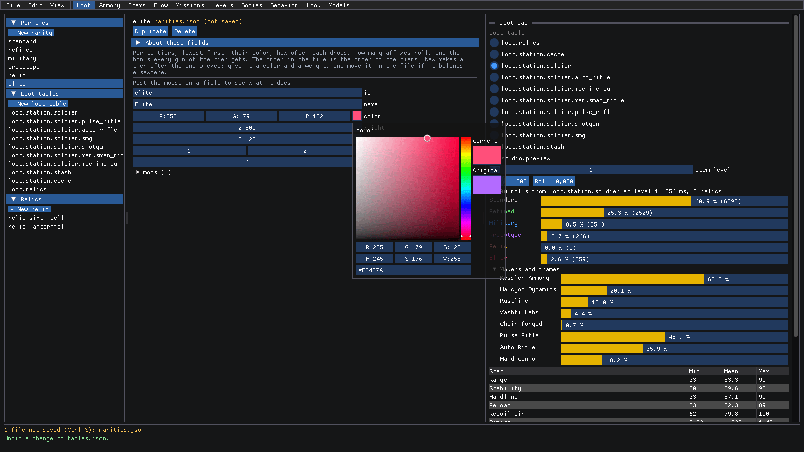
Now tune it. Each field has a tooltip, but here's the gist:
weightis how often it comes up against the other tiers. We dragged it down to about 1.1.perLevelis how its chance changes with item level. Above 0 it gets likelier deeper in.affixesis how many affixes roll on it, as [fewest, most].statBonusis added to all five 0 to 100 stats.modsroll onto every gun of the tier. Expand mods and itsdamagemod:mulis the damage band, [lowest, highest]. Each tier's band should sit above the last one, so a rarer gun hits harder.
The Lab has Elite at 1.3% now, in its own color:
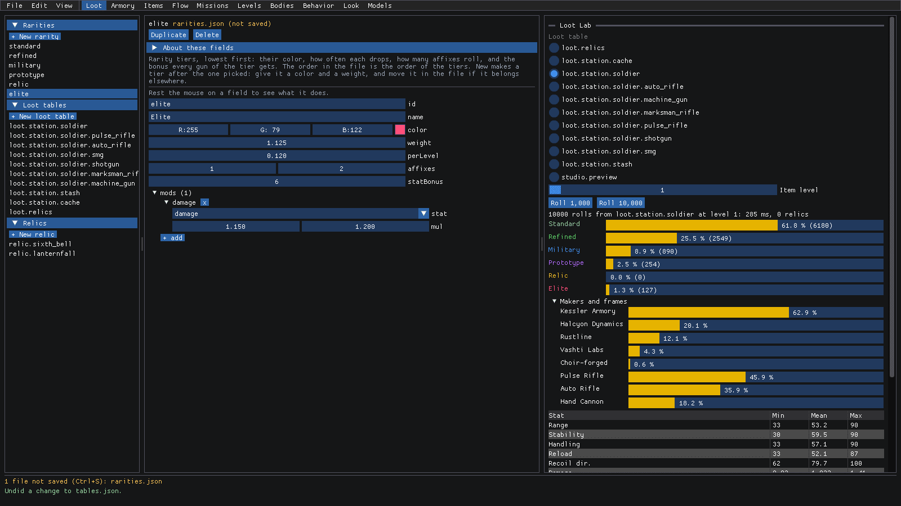
Ctrl+S to keep it.
A rarity that's never picked isn't much use, so check the tables too. A table's rarity map can favor (or snub) your
new tier, just like the manufacturers map above.
Check the odds deeper in
Does Elite stay rare all game, or does it take over later on? That's what Item level in the Lab is for. Deeper
decks drop higher item levels, and every tier's perLevel moves its odds as the level goes up.
With
loot.station.soldierpicked in the Lab, drag Item level to 17.Click Roll 10,000 (moving the slider doesn't re-roll on its own).
Standard has dropped from 62% to 31%, Refined is now the most common, and Elite (with its
perLevelof 0.12) has gone from 1.3% to 3.2%.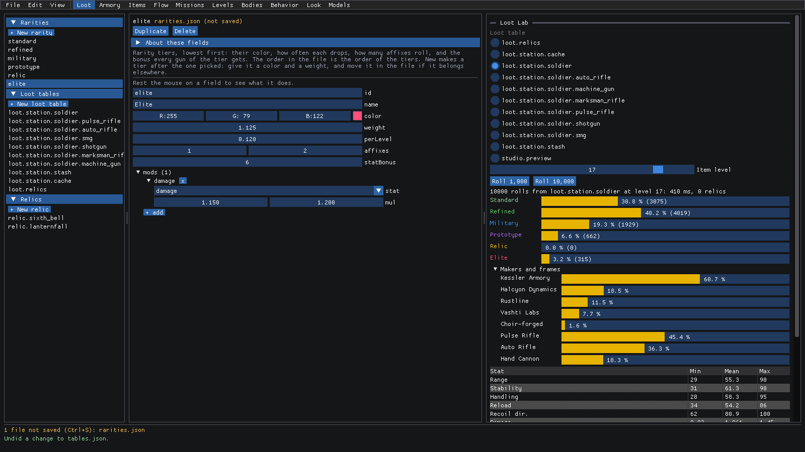
Scroll down the Lab. Under the stats table is the Power curve: how the guns' power spreads across the batch. Under that, set a Seed and click Roll one to see a single gun in full: its name, rarity, frame and maker, its stats, its traits, what its rarity and maker added, and every part with what it changes. Next seed rolls another.
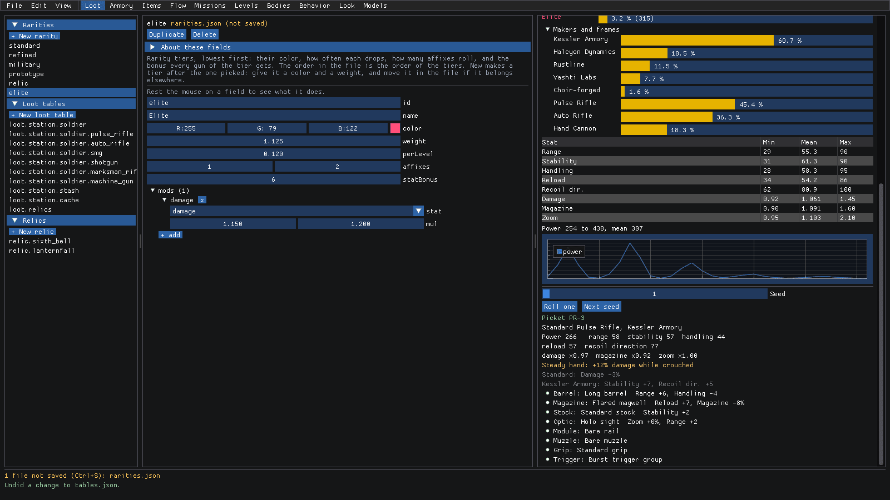
Nothing here changes the data, so there's nothing to save. It's just a better look at what you've got!
Make a relic drop more often
Relics are the hand-made uniques. They have fixed parts, roll at their best, and carry traits of their own on top of their maker's signature. They never drop by chance: only a loot table entry that names them can drop one.
Pick relic.sixth_bell under Relics. It has a
name, its frame (archetype) andmanufacturer, a line offlavortext, itstraits, its eightparts(one per slot) and itsaffixes. Each of those is picked from a list of what exists, with x to remove one and + add... for another.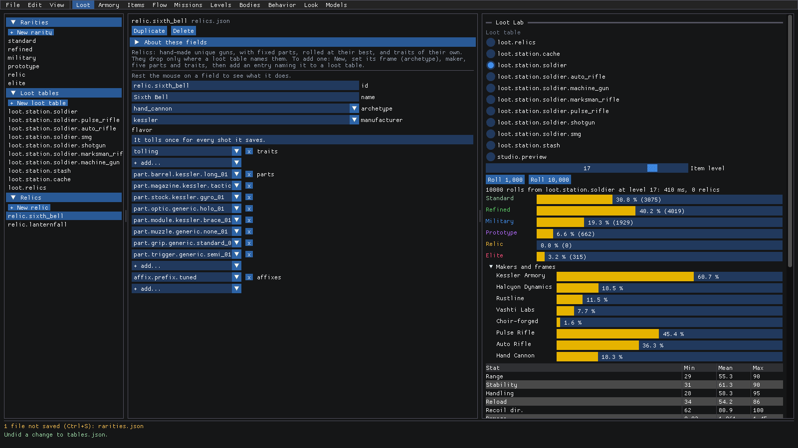
Now where does it drop from? Pick
loot.relicsunder Loot tables. Its entries name arelicinstead of a frame: the Sixth Bell and Lanternfall, one each.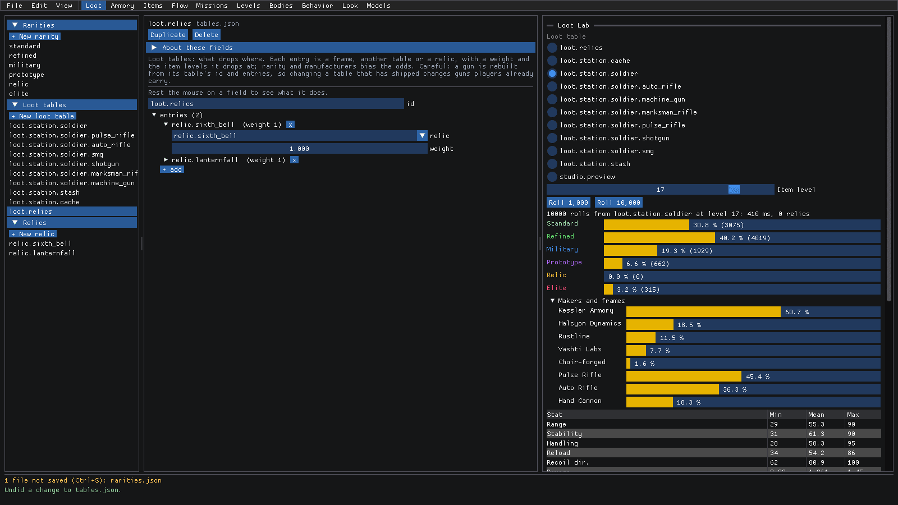
And who rolls
loot.relics? Pickloot.station.cache. Its last entry names a wholetable(loot.relics), at aweightof 0.15, and only from item level 2 up (minLevel). In the Lab, pickloot.station.cacheand Roll 10,000: relics are 0.9% of a cache's drops.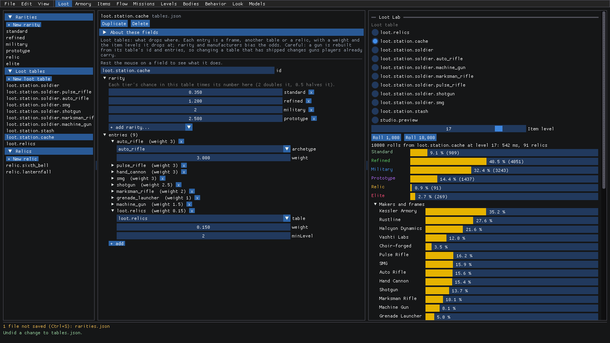
Drag that entry's
weightup to about 1.1. Relics jump to 5.7%, and the status bar lists both files you've changed so far.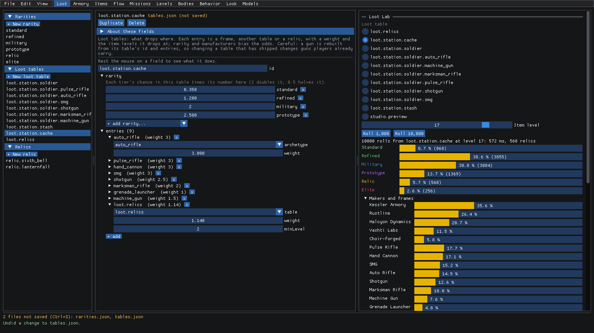
Making a brand new relic is the same flow as a rarity: + New relic, give it an id and a name, set its frame, maker,
parts and traits, then add an entry naming it to loot.relics (or any table you like).
When the data doesn't build
What happens if you rename something another file points at? Let's find out. Pick relic.sixth_bell and take the
last letter off its id.
Studio rebuilds the loot data after every change, and this time it can't. The bottom of the window says so in red, with
the game's own error message: loot.relics names a relic that doesn't exist anymore. The previews keep showing the
last version that built.
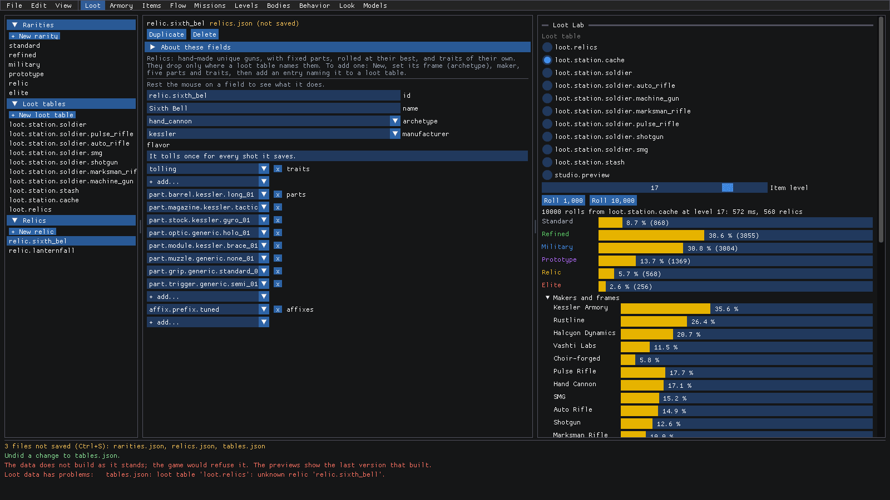
The game would refuse the data like this, so fix it before you save. Here that's just Ctrl+Z, and the message goes away. Too easy!
Where to next
- The reference covers every field. Loot mode is described at the top, and the Loot Lab under seeing a change.
- armory.md: the frames, makers and parts the tables roll from.
- items.md: crafting, where the armory fabricates guns from these same loot tables.
- adding-content.md: what to set when you add a rarity, table or relic.